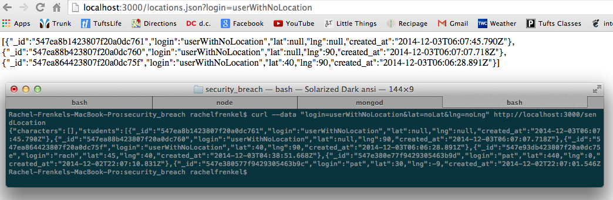
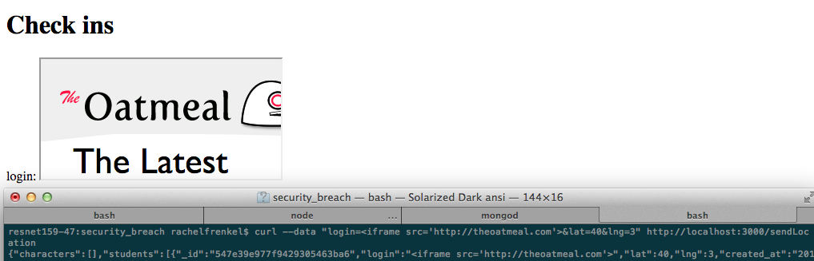

Assignment 4: Security Assessment of Client-Side and Server-Side
#####Assessed by Rachel Frenkel
###Introduction
###Methodology
###Abstract of Findings
###Issues Found
Issue: NaN lat and lng
Location: "/sendLocation" POST
Severity: Low
This is of low severity because, while it does not change the basic formatting of the user entries and website formatting, it does allow for invalid entries of incomplete latitude and longitute. This allows users to login without allowing the application to access their location, and these user entries will be displayed on the site home page.
Description:
In the POST request, the query lat and lng variables are extracted using the parseFloat() function. However, this function returns NaN (not a number) if the variable is not a float. The application then inserts the result of parseFloat, no matter what the return result, into a toInsert variable and stores this in the database with
var id = collection.insert(toInsert,
This allows for a lot of invalid entries, which may include 'NaN' for the lat and lng values for a user.
Proof of Vulnerability:

As you can see by this picture, I posted data to a user and did not pass in floats for the lat and lng parameters. This user was still inserted into the database, and displayed on the home page of the site.
Resolution:
This is a relatively easy issue to fix. The application can take advantage of the node.js validator library, which includes the function isFloat(). This function can be applied to the lat and lng variables after they have gone through parseFloat(), to ensure that what is being inserted is indeed a float, and not NaN.
This solution could look as follows:
var lng = parseFloat(request.body.lng);
var lat = parseFloat(request.body.lat);
//check if all inputs are there, and that lat and lng are floats
if ( !login || !lat || !lng || !isFloat(lat) || !isFloat(lng))
{
reponse.send(500);
} else { ...
Issue: cross-site-scripting
Location: "/sendLocation" POST, affecting GET request user displays
Severity: High
This is a highly severe issue because it allows an attacker to input malicious data into the site. This can manipulate the site into functioning in a way that it is not supposed to, doing things such as page redirects or displaying of images instead of user data.
Description:
In the POST request, the login query is inserted into the database without first being sanitized. Unlike lat and lng, it does not go through the parseFloat() function, so it is not even translated into something more harmless like NaN. This allows an attacker to insert malicious HTML and Javascript as the login. As a result, when the home page is accessed and all user infos are displayed, this malicious HTML or Javascript is run, which can have terrible consequences for the site.
Proof of Vulnerability:
To show this issue, I used two different methods.
I inserted an iframe of the site "theoatmeal.com" for the login:

This homepage display of the users was completely hijacked by this iframe tag. No other users were displayed, holding up the rest of the page information, and a frame of an irrelevant site was displayed instead as the login.
I inserted a javascript command to redirect to "funnyordie.com"
 This made it so that when the homepage is accessed, when the application attempts to display the login with the redirect command, the command is executed and the homepage now displays the new website. This is highly dangerous -- it can completely wipe out a site and not allow any of it to display, only to display other unrelated sites. It can confuse clients, and turn them away from the site (literally and figuratively).
This made it so that when the homepage is accessed, when the application attempts to display the login with the redirect command, the command is executed and the homepage now displays the new website. This is highly dangerous -- it can completely wipe out a site and not allow any of it to display, only to display other unrelated sites. It can confuse clients, and turn them away from the site (literally and figuratively).
Resolution:
To resolve this issue, the login parameter must be sanitized before it is added to the database. This can be done in a variety of ways. One module that makes this easier is the node.js 'validator' module. In its newest version, you can use its escape() method to replace <, >, &, ', and " with HTML entities. You can also escape the user input by using validator's whitelist() function to remove characters that do not appear in the whitelist.
- login is not checked if it is a float in POST, so if you pass in non-numbers to login, such as an iframe tag, for GET requests this is redisplayed, no matter what it is.
- I displayed an iframe
- I redirected to funnyordie.com
- DONE lat and lng are checked for if they are floats in POST, but no matter what they are still stored in the database. This does not allow you to store whatever you want, but NaN (not a number) will be stored if the parameters are not floats, which allows for bad input to be stored in the database
- can put in anything for login, lat, and lng, so could really be logging in from Tufts University in Medford, but manipulate the query so that it says you're logging in from Antarctica. A user can also use any username for the login, allowing them to give false information for any username.
- Issue
- Location
- Severity
- Description
- Proof of Vulnerability
- Resolution
###Conclusion